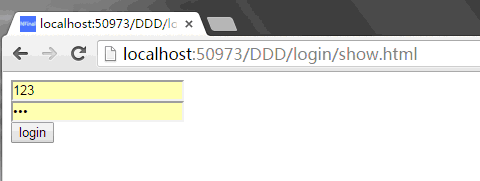
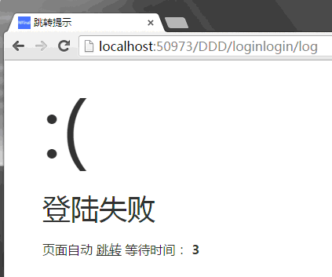

public class login:Controller
{
public void show()
{
View("show.aspx");
}
[GetHtml("login/log")]
public void log(string name,string pwd)
{
var con = Models.Common.OpenConnection();
var count = con.QueryObject("select count(*) from users where name=@name and pwd=@pwd").ToInt32();
con.Close();
if (count>0)
{
//保留用户状态，1.使用cookie加密，2.使用redis缓存。
//NFinal的vNext版本不支持session,因为IIS在高并发访问时，IIS内存占用太大的话容易假死。
this.Success("登陆成功",Url.DDD_IndexController_Index(), 3);
}
else
{
this.Error("登陆失败",Url.DDD_login_show(), 3);
}
}
public void reg(string name,string pwd)
{
var con = Models.Common.OpenConnection();
var id = con.Insert("insert into users(name,pwd) values(@name,@pwd)");
con.Close();
AjaxReturn(id>0);
}
}
2.然后添加视图：
<%@ Page Language="C#" AutoEventWireup="true" CodeBehind="show.aspx.cs" Inherits="WebApplication1.DDD.Views.Default.login.show" %>
<!DOCTYPE html>
<html xmlns="http://www.w3.org/1999/xhtml">
<head runat="server">
<meta http-equiv="Content-Type" content="text/html; charset=utf-8" />
<title></title>
<script src="/Scripts/jquery-1.11.2.min.js"></script>
<script src="/Scripts/Url.js">/script>
</head>
<body>
<form id="form1" runat="server" method="post" action="<%=Url.DDD_login_log() %>">
<div>
<input name="name" type="text" value="123" />
<input name="pwd" type="password" value="123" />
<input type="submit" value="login" />
</div>
</form>
</body>
</html>
2.右键点击WebCompiler.aspx.选择在浏览器中查看.
生成开始
生成结束
<!DOCTYPE html>
<html xmlns="http://www.w3.org/1999/xhtml">
<head>
<meta http-equiv="Content-Type" content="text/html; charset=utf-8" />
<title>
<meta http-equiv="Cache-Control" content="no-cache">
<script src="/Scripts/jquery-1.11.2.min.js">
</head>
<body>
</body>
</html>
show.cs中的代码如下:
public void show()
{
Write("");
}
show中的代码只是跳转并执行login下的show方法.
4.右键点击show.html并选择在浏览器中查看,则可看到登陆效果.

登陆成功时显示如下，3秒后跳转到首页
登陆失败时显示如下，3秒后跳转到登陆页
